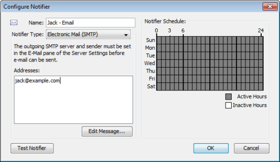
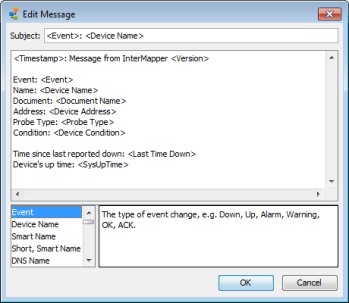

Use an e-mail notifier to send an e-mail message to one or more recipients. The e-mail message can provide detailed information about the device that triggered the notifier. The example below shows the Configure Notifier window for the E-mail notifier type.
 Configuring an e-mail notifier.
To configure an e-mail notifier:
Note: E-mail is sent using an outgoing SMTP mail server. Before InterMapper can send e-mail notifications, you must specify the SMTP host you want to use for sending e-mail notifications. For more information on how to specify your outgoing SMTP mail server (and a backup server) see E-mail Preferences.

Edit E-mail Message window,
showing the default e-mail message.
An E-mail notifier sends a text message that describes the failure.
Use the Edit Message window to edit the message sent by the notifier. The example below shows the Edit E-mail Message window containing the default e-mail message. The list at the lower left contains variables you can substitute in the text.
Double-click an item to insert it into the message text. When the notification is sent, the inserted item is replaced with its current value in the message text.
Note: You can also use InterMapper variables and Javascript to insert information dynamically into a notifier's subject or message text. For more information, see Dynamic Label & Alert Text{}.